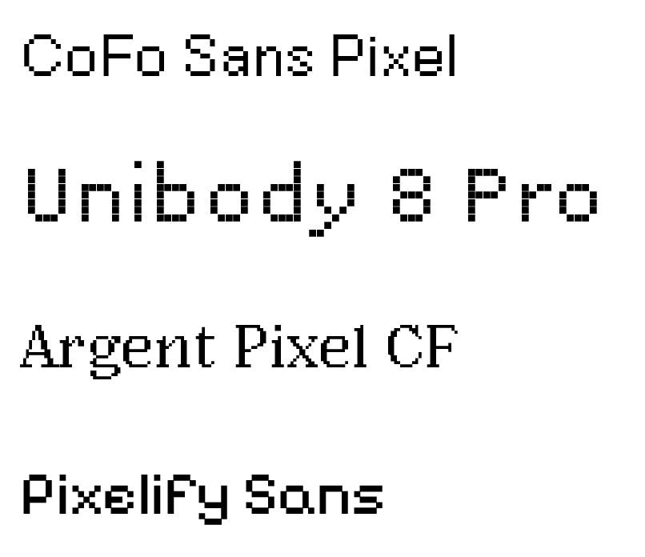

Sabrina
Ok, I know this is gonna sound random, but like, you know how- that thing- the uh.. the one where you only know people because you saw them in something else?

Deja
Like when you see an actor in one movie but remember them from a previous movie you saw them in!
Sabrina
YES! THAT THING! Well, you know, I was doing some thinking, and sometimes that's not a great idea but in my defense I was left unsupervised but ignoring that, I was thinking about it specifically with Dungeons & Dragons.
Sophie
. . .Is that why I only know one person here besides you?
Sabrina
Yep, my bad about that, I just be knowing people.
Eli
She be knowing people...
Sabrina
Moving on, and thanks for the segway cause that's actually why I've gathered this ragtag group of people here that I all know, but the rest of you only know a couple others.
Carter
She's going to get us.
Sabrina
Well not yet at least, but Radtke states that-
"We perform for one another all the time, even when we're alone, or when masked by a crowd's anonymity, imposing the vantage point of a nonexistent viewer, pretending at life the way we've seen it onscreen our whole lives."
Radtke
Sabrina
Uh, thank you for that.. didn't know that would happen but uh, yes that's what she states. So I was thinking about how in D&D you play with many people, but all of you are in character, so like, how much of them do you really know?
Jordan
Is this related to you being in other campaigns and not even knowing people's names?
Sabrina
.......maybe
Jordan
Ha!
Sabrina
But- you know- in that scenario I really only know those people from an occasional session that lasts like 4 hours, I've never met them in real life, I couldn't even tell you their favorite color!
Carter
Could you say what my favorite color is?
Jordan
It's blue.
Carter
WHA-
Sabrina
Thank you Jordan and no! I couldn't answer that question, but we did play Big Walk together with a ton of people and that was awesome and I'll remember that.
Eli
big walker
Sophie
big walker
Eli
who up bigging they walk?
Sabrina
We up bigging our walk like how our past experiences reflect our current ones, which was found in an experiment by Sedikides and Wildschut about nostalgia where they said-
"Nostalgia may refer to the past, but it is surprisingly forward looking. It links and assimilates one's past with one's present and, crucially, future."
Sedikides & Wildschut
Jordan
HOW do you keep doing that!?
Sabrina
I DON'T KNOW AND I'M SCARED- but we must lock in so I guess it'll just happen and we'll accept it and move on because they also talk about social connec- social connecteded- social connectedness :)
Deja
Oh! That sounds like what I'm looking into with online communities!
Sabrina
It can honestly be anywhere! It's really just feeling like you belong in a space, well technically a network.
Sophie
So you want to put all of us in a space and see what happens?
Sabrina
Yeah! Cause-
"Taken together, nostalgia for an encounter with an outgroup member breeds trust for, and curtails anxiety about, the entire outgroup, culminating in stronger willingness for contact with the outgroup."
Sedikides & Wildschut
Eli
They're starting to grow on me, I'm chill with them now.
Sabrina
Wow this is actually proving my point very well, but see how quickly we can accept others? A lot of the uh- self doubt stuff about not really feeling like you fit in cause people already look like they have groups so you don't really want to intrude on that and potentially ruin it for everyone cause that's just bad news bears and- tell em Radtke!
"Loneliness is often exacerbated by a perception that one is lonely while everyone else is connected. It's exaggerated by a sensation of being outside something that others seem to be in on..."
Radtke
Sabrina
so uh, you know... friendship!
Sophie
friendship!
Eli
friendship!!!!
Deja
friendship!!!
Jordan
friendship!
Carter
friendship!